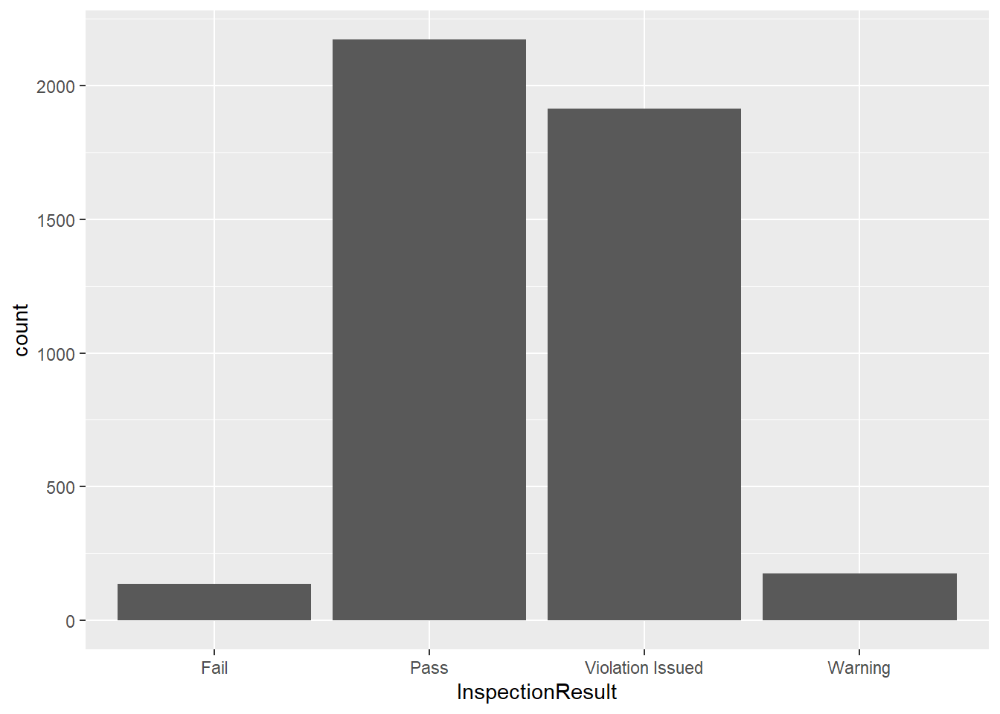
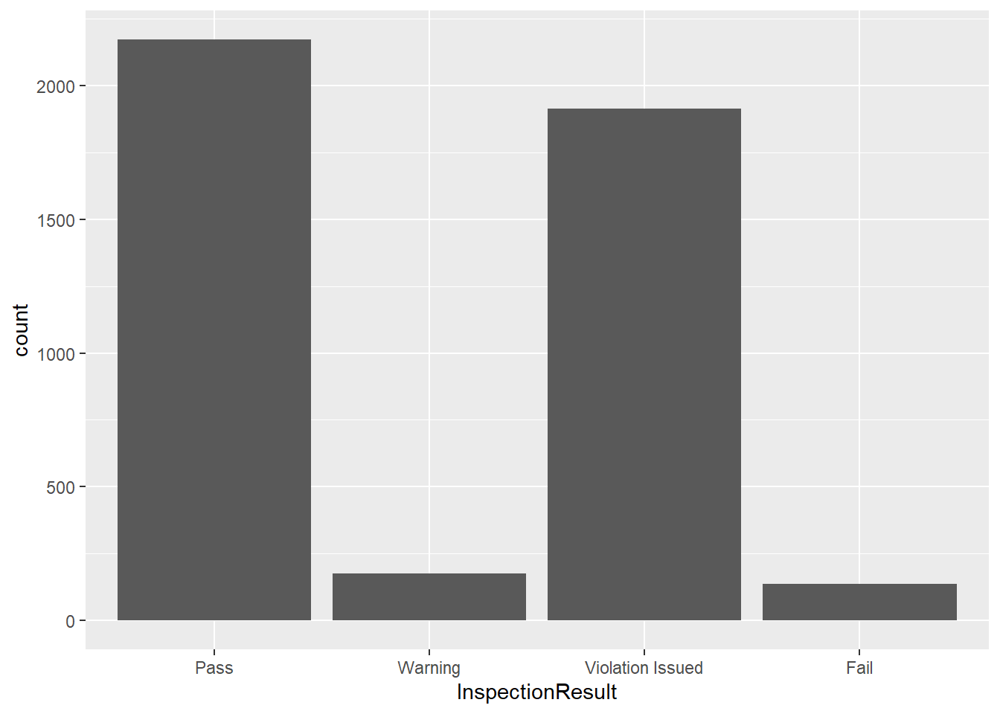

# Data Import ------------------------------------------------------
insp <- read_csv("data/inspections10k.csv")Warning: One or more parsing issues, call `problems()` on your data frame for details,
e.g.:
dat <- vroom(...)
problems(dat)
##Today
This workshop aims to cover:
Don’t forget to:
Let’s start by importing our csv to a data frame called “insp”.
# Data Import ------------------------------------------------------
insp <- read_csv("data/inspections10k.csv")Warning: One or more parsing issues, call `problems()` on your data frame for details,
e.g.:
dat <- vroom(...)
problems(dat)
Now we’ll use the names() function to explore the columns.
names(insp) [1] "RecordID" "CertificateNumber" "BusinessName"
[4] "InspectionDate" "InspectionResult" "Industry"
[7] "Borough" "BuildingNumber" "Street"
[10] "Street2" "UnitType" "Unit"
[13] "Description" "City" "State"
[16] "Zip" "Longitude" "Latitude"
We have a lot of text in this dataset, which we can confirm by using the class() function.
class(insp$BusinessName)[1] "character"The character object in R contains strings, aka text data. This lesson will introduce you to manipulating strings in R.
First, you’ll notice that the street names and street numbers in this dataset are split into two different columns. If we want to combine them, we can use the str_c function.
str_c(insp$BuildingNumber, insp$Street) [1] "79SARATOGA AVE" "4250BOSTON RD" "2904STILLWELL AVE"
[4] "56228TH AVE" "600E 138TH ST" "1569SAINT NICHOLAS AVE"
[7] "17142LIBERTY AVE" "2444WALTON AVE" "540HEGEMAN AVE"
[10] "1304KINGS HWY"
[ reached getOption("max.print") -- omitted 9990 entries ]Take a look at the results above. We have a problem! We need a space to separate the street number and name. Luckily, we can add a parameter to str_c that allows us to do that. Let’s also add the results to a new column in our data frame.
insp$StreetAddress <- str_c(insp$BuildingNumber, insp$Street, sep=" ")
head(insp$StreetAddress)[1] "79 SARATOGA AVE" "4250 BOSTON RD"
[3] "2904 STILLWELL AVE" "5622 8TH AVE"
[5] "600 E 138TH ST" "1569 SAINT NICHOLAS AVE"
We can also subset portions of strings. Suppose we have a string that reads “Hello World” and we want to subset the word “Hello”. We can use the str_sub() function, but we need to let it know the leftmost character and the rightmost character for the portion we want to subset.
In our “Hello World” string, H is our leftmost character. It also has the first position in the string. O is our rightmost character and it has the fifth position in the string. So, our str_sub() function looks like this:
str_sub("Hello World", 1, 5)[1] "Hello"
The Industry column in our dataset includes an industry classification for all of our businesses along with a 3-digit code. We need subset that code and put it in a seperate column. Notice, however, that the code is at the end of the string rather than the beginning.
Luckily, we can use a negative sign to indicate that we are counting backwards from the end of the string. However, we still need to put the parameters of the function in order from leftmost character to rightmost character.
insp$IndustryCode <- str_sub(insp$Industry, -3, -1)
Now that we’ve created a seperate column for the 3-digit code, we can remove it from the original Industry column by subsetting out the industry name. Unfortunately, the industry name is variable in length. Since we don’t know where the rightmost character will be for every industry name, how can we use str_sub()?
We know that the part of the string we want to remove is six characters long: the three-digit code plus a dash and two spaces. So, we just need to know the total length of the string minus six characters. Thankfully, there is a function that counts the total number of characters in a string, str_length().
insp$Industry <- str_sub(insp$Industry, 1, str_length(insp$Industry)-6)
head(insp$Industry)[1] "Cigarette Retail Dealer" "Scrap Metal Processor"
[3] "Tobacco Prod'T Sales" "Stoop Line Stand"
[5] "Electronic Store" "Wearing Apparel" Often when we are working with text data, we will find that we have characters which follow a certain pattern. For example, a U.S. phone number commonly follows this pattern:
Likewise, an email address follows this one:
It is often useful for us to be able to detect these patterns when working with strings. Many programming languages use a form of notation for describing these patterns called regular expressions. Some of the commonly used regular expressions in R are below.
| Regular Expression | Pattern |
|---|---|
| ^ | start of string |
| $ | end of string |
| . | match any character |
| [a-z] | match any lowercase letter |
| [A-Z] | match any uppercase letter |
| [0-9] | match any number |
| [abc] | match a, b OR c |
| [^abc] | match anything EXCEPT a, b OR c |
| {x} | perform the match x number of times |
Additional patterns can be found on the Regular Expressions Cheat Sheet.
Let’s try using them with some of our data. New York has a lot of numbered streets, so we’ll use the str_detect() function with regular expressions to find street names that begin with a number.
str_detect(insp$Street, "^[0-9]") [1] FALSE FALSE FALSE TRUE FALSE FALSE FALSE FALSE FALSE FALSE FALSE TRUE
[13] FALSE FALSE FALSE FALSE FALSE FALSE TRUE FALSE
[ reached getOption("max.print") -- omitted 9980 entries ]As you can see, str_detect() only supplies us with TRUE or FALSE depending on whether each string matches our regular expression. However, we can combine it with the mean() function to determine what proportion of our streets begin with a number.
mean(str_detect(insp$Street, "^[0-9]"), na.rm = TRUE)[1] 0.1992794About 20% of our street names start with a number!
To actually see the strings that match our regular expressions, we need to use the str_subset() function. Many of our business names end with “INC”. Let’s find them.
str_subset(insp$BusinessName, "INC$") [1] "CONEY ISLAND 7 & 7 SUPERMARKET INC" "MII VAPE ENTERPRISE INC"
[3] "MODELLS SPORTING GOODS INC" "AFRIDA ANAN KOTWAL INC"
[5] "EVERGREEN FARM MARKET INC" "KIRINO ENTERPIRSES INC"
[7] "NILKANTH FOOD MART INC" "GT 157 DELI GROCERY INC"
[9] "GO NEWYORK TOURS INC" "COMPUTER SYSTEMS PROVIDER, INC"
[ reached getOption("max.print") -- omitted 1947 entries ]To subset the portion of a string that matches the regular expression, we can use str_extract(). Let’s create a new column in our dataset called “InspectionYear” that includes only the year of “InspectionDate”.
insp$InspectionYear <- str_extract(insp$InspectionDate, "^[0-9]{4}")
head(insp$InspectionYear)[1] "2016" "2017" "2016" "2017" "2018" "2017"So far, we’ve only scratched the surface of regular expressions using some extremely simple examples. Regular expressions can become very complex. To see some regular expressions used in the real world, visit the Regular Expression Library.
Let’s filter our dataset to include only the following inspection results: Pass, Warning, Violation Issued or Fail. We can use the | symbol to represent “OR” in our filters, allowing for multiple conditions.
insp_sm <- insp %>%
filter(InspectionResult == "Pass" |
InspectionResult == "Warning" |
InspectionResult == "Violation Issued" |
InspectionResult == "Fail")Now we want to plot these results on a simple bar chart like so:
ggplot(insp_sm, aes(InspectionResult)) +
geom_bar()
Our bars appear in alphabetical order. It’s the same if we create a frequency table:
table(insp_sm$InspectionResult)
Fail Pass Violation Issued Warning
136 2171 1913 177
What if we want to order our results from best to worst? To create ordered categories in R, we have to use factors. A factor is a seperate class of object from characters, so we need to use a function to create one.
insp_sm$InspectionResult <- factor(insp_sm$InspectionResult,
levels = c("Pass", "Warning", "Violation Issued", "Fail"))
class(insp_sm$InspectionResult)[1] "factor"Notice the order we put our levels in above. That order will now be reflected in the bar chart and frequency table.
ggplot(insp_sm, aes(InspectionResult)) +
geom_bar()
table(insp_sm$InspectionResult)
Pass Warning Violation Issued Fail
2171 177 1913 136 At times, we may want to rename the levels in our Factors. For example, a “Violation Issued” result usually means that the business owner has to pay a fine. So, let’s change the level “Violation Issued” to “Fine” using the fct_recode() function.
insp_sm$InspectionResult <- fct_recode(insp_sm$InspectionResult, "Fine" = "Violation Issued")
table(insp_sm$InspectionResult)
Pass Warning Fine Fail
2171 177 1913 136 We may also want to combine our levels in some cases. Let’s use fct_collapse() to create levels that simply indicate a “Good” or “Bad” result.
insp_sm$InspectionResult <- fct_collapse(insp_sm$InspectionResult,
"Good" = "Pass",
"Bad" = c("Warning", "Fine", "Fail"))
table(insp_sm$InspectionResult)
Good Bad
2171 2226
Concerning our original “insp” data set, use the functions we learned this week to answer the following questions:
Create a new column called “Address” that includes the street address, city, state and zip.
How many business names have the word “NY” in them? HINT: The sum() function will work here.
Find all business names that end with INC, LLC, or CORP. HINT: remember the symbol we use for “or”.
Notice that there are multiple types of Record IDs, such as ENFO, CMPL, UNIT, DCA, etc. Create a new data frame called “enfo” that includes ONLY records with ENFO IDs. HINT: You will need to use both filter() and str_detect() to accomplish this.
In your enfo dataset, remove the “-ENFO” portion from each ID. Note that the IDs are variable in length.
R comes pre-loaded with a dataset called “diamonds”. Store a copy of the dataset in your Global Environment with the following code:
diamonds <- diamondsWhat class of object are the “cut”, “color” and “clarity” columns?
What happens when you use the min() function on the the cut column? What happens when you use the min() function on the factor in your “insp_sm” dataset?
How can you create an ordered factor? Use the ? function to read the documentation on factors.
Read about the GIA diamond clarity grading scale here. Alter the factor levels in the diamonds dataset to reflect the category names in the GIA scale (Flawless, Internally Flawless, etc.)